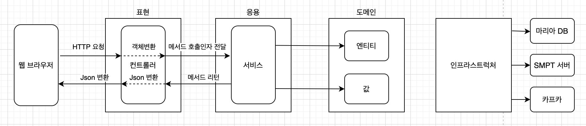
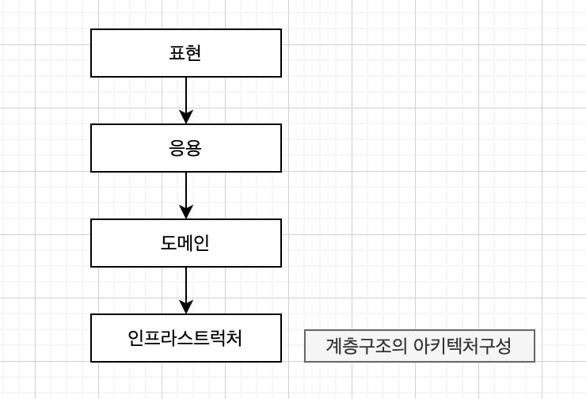
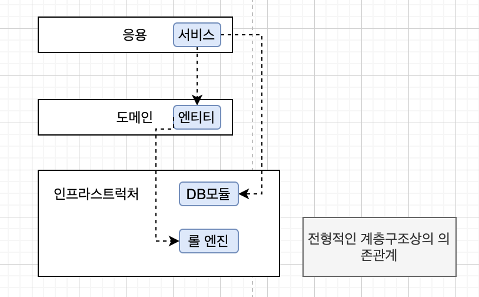
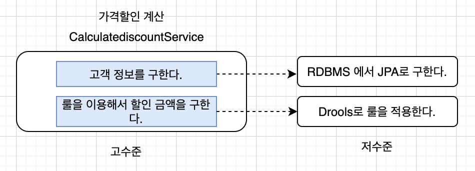
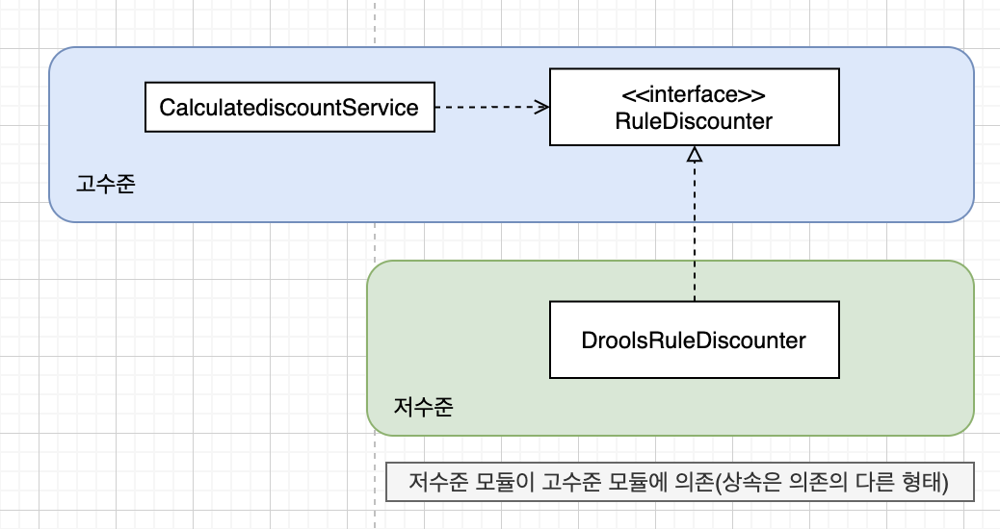
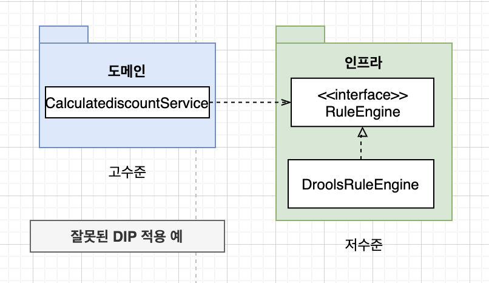
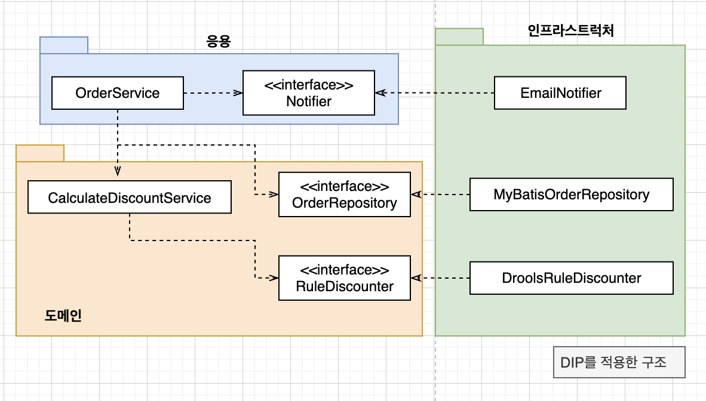
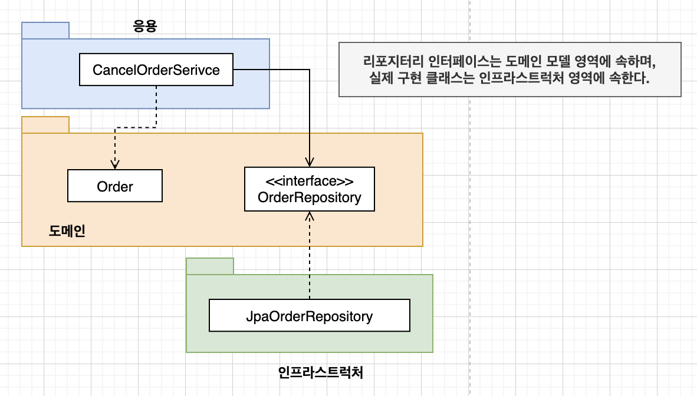
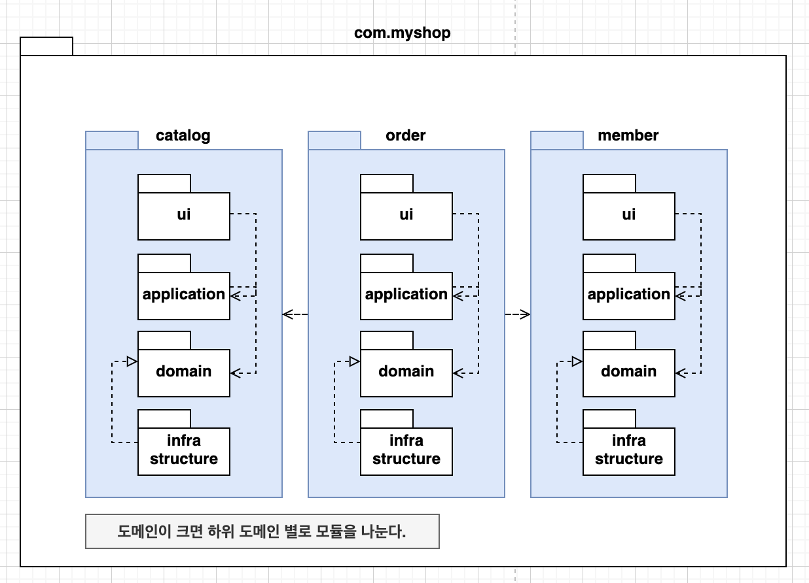
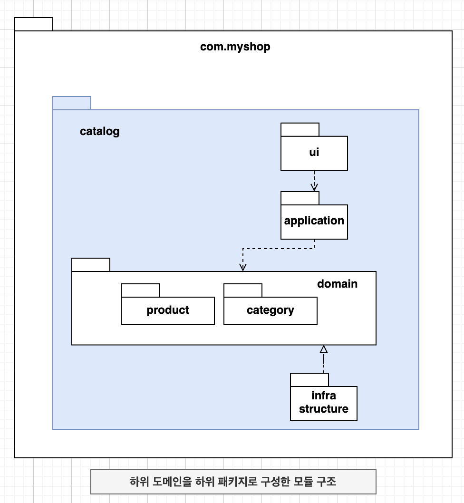

“DDD Start! 2장”
네 개의 영역

- 표현 영역
- 사용자 요청을 받아 응용영역에 전달
- 응용처리 결과 사용자에게 보여줌
- 스프링 MVC
- 응용 영역
- 시스템이 사용자에게 제공해야 할 기능 구현
- 도메인 모델에 로직 수행을 위임
- 도메인 영역
- 도메인 모델
- 도메인의 핵심 로직 구현
- 인프라스트럭처
- 구현기술
- 논리적 개념보다 실제 구현
계층 구조 아키텍처

- 상위계층에서 하위계층으로의 의존만 존재
- 하위 계층은 상위 계층 의존하지 않음

- 표현, 응용, 도메인 계층이 인프라스트럭처 계층에 종속
- 인프라스트럭처에 의존하면
테스트 어려움과기능 확장의 어려움 - 해답은 DIP
DIP

- 저수준의 모듈이 고수준의 모듈에 의존하도록 변경
- 추상화한 인터페이스에 의존

- DIP 적용 시 테스트의 어려움과 확장의 어려움 문제 해결
- 실제 구현 대신 스텁이나 Mock 사용하여 거의 모든 상황 테스트 가능
DIP 주의사항

DIP 적용 시 하위 기능을 추상화한 인터페이스는 고수준 모듈 관점에서 도출 한다.
DIP 와 아키텍처

도메인 영역의 주요 구성요소
- 엔티티
- 고유의 식별자
- 도메인의 고유 개념 표현
- 도메인 모델의 데이터 포함
- 해당 데이터 관련 기능 함께 제공
- 벨류
- 고유 식별자 없음
- 하나의 도메인 객체 속성 표현
- 애그리거트
- 관련 엔티티와 벨류 객체를 개념적으로 하나로 묶은 것
- Order 엔티티 + OrderLine 밸류 + Order 밸류 = 주문 애그리거트
- 리포지터리
- 도메인 모델의 영속성 처리
- DBMS 테이블에서 엔티티 객체를 로딩 , 저장 기능 제공
- 도메인 서비스
- 특정 엔티티에 속하지 않은 도메인 로직 제공
- 도메인 로직이 여러 엔티티와 벨류를 필요로 할경우
엔티티와 벨류
엔티티
실제 도메인 모델의 엔티티와 DB 관계형 모델의 엔티티는 같은 것이 아님을 알게 되었다.
… 도메인 모델의 엔티티는 데이터와 함께 도메인 기능을 함께 제공한다는 점이다.
- 단순히 데이터를 담고 있는 구조가 아닌 데이터와 함께 기능 제공 하는 객체
- 두 개 이상의 데이터가 개념적으로 하나 인 경우 벨류 타입을 이용해 표현 가능
1 | public class Orderer{ |
- 벨류는 불변으로 구현할 것을 권장
- 엔티티의 벨류 타입 데이터 변경 시 객체 자체를 완전히 교체
1 | public class Order { |
애그리거트
개별 객체 뿐 아니라 상위 수준에서의 모델 보여줌으로써 전체 모델의 관계와 개별 모델을 이해하는데 도움이 된다.
- 도메인 모델의 구성 요소는 규모가 커질수록 복잡 해짐
관련 겍체를 하나로 묶은군집- 관련 객체를 묶어 객체 군집 단위로 모델 바라봄
- 개별 객체 관계가 아닌 애그리거트 간의 관계로 도메인 모델 이해, 구현
- 큰 틀에서 도메인 모델 관리
- 루트 엔티티
- 군집 속한 객체들을 관리
- 애그리거트 단위로 구현을 캡슐화
리포지터리
- RDBMS, NoSQL, 로컬 파일 등 물리적인 저장소에 도메인 객체 보관 하기 위한 도메인 모델
- 애그리거트 단위로 도메인 객체를 저장하고 조회 하는 기능 정의
- 도메인 모델 관점에서 리포지터리는 도메인 객체를 영속화하는데 필요한 기능을 추상화 한것
- 고수준 모듈

인프라스트럭처 개요
도메인 영역과 응용 영역에서 인프라스트럭처의 기능을 직접 사용하는 것보다 이 두 영역에 정의한 인터페이스를 인프라스트럭처 영역에서 구현하는 것이 시스템을 더 유연하고 테스트하기 쉽게 만들어 준다.
… 구현의 편리함은 DIP가 주는 다른 장점(변경 유연성, 테스트 쉬움) 만큼 중요하기 때문에 DIP 의 장점을 해치지 않는 범위에서 응용 영역과 도메인 영역에서 구현 기술에 대한 의존을 가져가는 것이 현명하다.
- @Transactional
- Jpa 의 @Table, @Entity
모듈 구성


- 각 애그리거트 모델과 리포지터리 같은 패키지에 위치
- Order, OrderLine, Orderer, OrderRepository > com.myshop.order.domain
- 도메인 복잡하면 도메인 모델과 도메인 서비스를 별도 패키지 분리
- com.myshop.order.domain.order : 애그리거트 위치
- com.myshop.order.domain.service : 도메인 서비스 위치
- 응용 서비스의 도메인 별 패키지 분리
- com.myshop.catalog.application.product
- com.myshop.catalog.application.category
- 모듈 구조를 세분화 하는 규칙 없음
- 한 패키지에 너무많은 타입이 몰려 코드를 찾을 때 불편한 정도만 아니면 됨